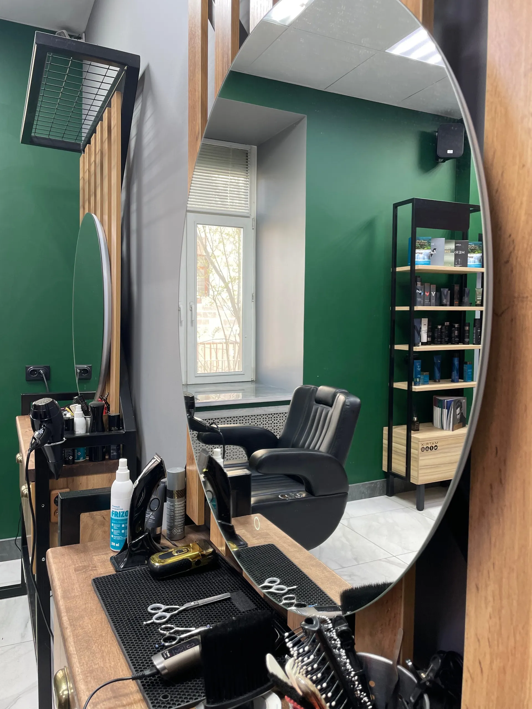
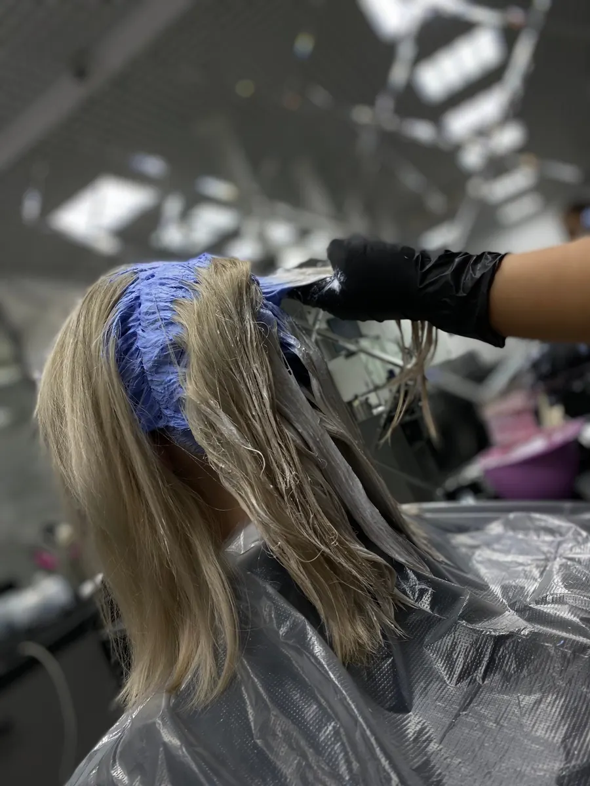
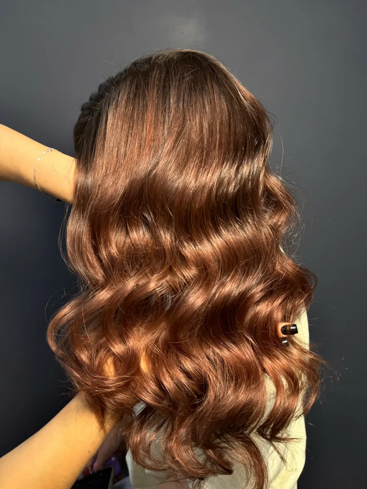
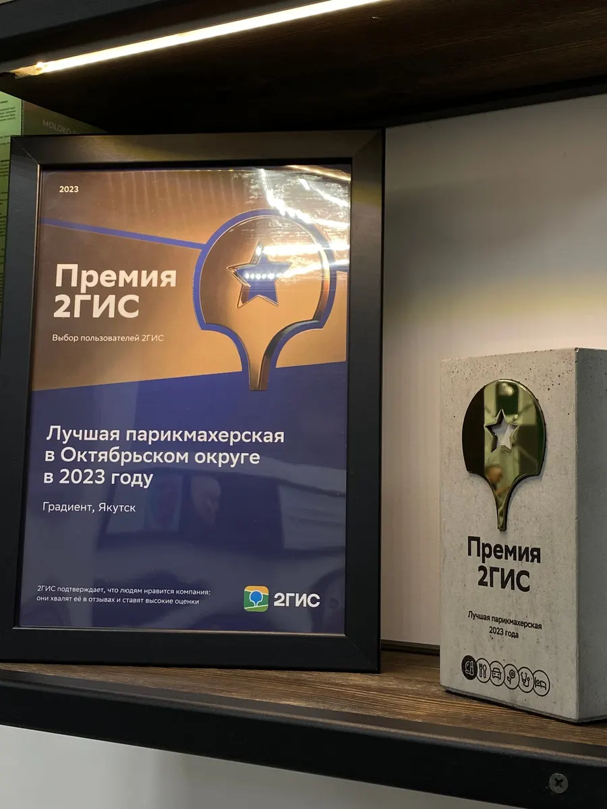

Стрижка · окрашивание · укладка · брови
Лучшая парикмахерская Октябрьского округа: к своему мастеру по записи
По версии пользователей 2ГИС, 2023 год. Специалист или топ-мастер – цена по прайсу, материалы включены.

- 5,0 на Яндекс Картах – 148 оценок
- Премия 2ГИС 2023 – лучшая парикмахерская округа
- Салон Estel Premier, центр города
Цена по прайсу – видна до записи
У каждой услуги две цены: специалист или топ-мастер. Выбираете по бюджету или идёте к топу – решаете вы.
Стрижки
- Стрижка женскаялюбая длина – помоем, высушим, уложим; топ-мастер – 3 150 ₽от 2 300 ₽
- Стрижка мужскаямытьё и укладка; топ-мастер – 1 400 ₽от 900 ₽
- Стрижка и бородастрижка + оформление бороды и усовот 1 700 ₽
- Чёлка или кончикибез мытья, до 5 смот 800 ₽
Цвет и уход
- Окрашивание корнейматериалы Estel или Matrix включеныот 4 200 ₽
- Окрашивание в тонили седины, длина 1от 5 500 ₽
- Окрашивание в техникахаиртач, шатуш, балаяж, омбреот 14 200 ₽
- Биозавивкадлина 1от 7 750 ₽
- Укладка«Объём» или «Локоны»от 1 700 ₽
- Бровикоррекция, окрашивание, ламинированиеот 500 ₽
Цена зависит от уровня мастера – специалист или топ-мастер – и длины волос. Материалы для окрашивания уже в цене.
Как проходит запись
- 01
Пишете услугу и удобное время
Можно сразу назвать мастера, к которому ходите.
- 02
Выбираете уровень мастера
Специалист или топ-мастер – цена каждого видна в прайсе.
- 03
Напоминаем за час
Перед записью предупредим, чтобы вы не забыли.
- 04
Приходите к нам
Орджоникидзе, 44 – центр города, вход со стороны улицы, есть парковка.
- 05
Платите по прайсу
Картой.



Почему к нам ходят годами
Выслушаем до стрижки
Мастер уточняет пожелания до начала работы, чтобы получилось как вы хотели.
Подскажем уход
После окрашивания мастер расскажет, как ухаживать за волосами дома.
Стрижём всей семьёй
Взрослые и дети – в одном салоне, к своим мастерам.
Салон для кудрявых
Работаем с кудрявыми волосами – редкость для города.
Отзывы с Яндекс Карт
«Делала женскую стрижку у мастера Чингиза и осталась очень довольна! 🙌 Он внимательно выслушал мои пожелания и в итоге подстриг именно так, как я хотела. Всё аккуратно, ровно и с учётом деталей. Видно, что человек работает с опытом и вкусом. Однозначно рекомендую!»
Айталина Алексеева · 15 апреля
«Уже несколько лет мы с дочкой ходим в эту парикмахерскую 🫶 Всегда чисто, уютно, все мастера профессионалы своего дела, начиная с ресепшена🫶 Ходим только к Жасмин уже несколько лет и каждый раз уходим довольные♥️»
Юрий Ксенофонтов · 9 октября
«Мастер Нази очень красиво покрасила волосы, сразу проконсультировала как ухаживать за обесцвеченными волосами. В самом салоне уютно, чисто, предлагают чай во время ожидания.»
Нюргуяна П. · 21 сентября
Отзывы с карточки на Яндекс Картах, без правок.
Контакты
- Адрес
- ул. Орджоникидзе, 44, вход со стороны улицы, Якутск
- Часы
- ежедневно 9:00–20:00, по записи
- Телефон
- +7 (4112) 71-80-00